- ジムの防衛でよく見かける相手ごとに、ジム攻め（ジムバトル）用の対策をまとめた常設ページです。
- 各相手の並び：弱点 → よくある技 → 特に痛いゲージ技 → 対策ベスト3〜5（通常技／ゲージ技）→ 安全枠。
- 「安全枠」＝相手の一番痛いゲージ技を半減／無効で受けられる枠。回避が苦手でも事故りにくい対策です。
- 対策はジム攻め用（回避しつつ何度も殴れる安定感も大事）。レイド用の対策とは別物として見てください。
🧰 汎用ジム攻略パーティ例（大抵のジムを回せる6枠）
迷ったらこの6体。たいていのジムはこれで回せます。手持ちが無ければ下の代替案で。
| ポケモン | タイプ | 通常技／ゲージ技 | 役割（どんな相手に） |
|---|---|---|---|
 カイリキー カイリキー | かくとう | カウンター／インファイト | ハピナス・ラッキー・カビゴン・ケッキングなどノーマルの壁、バンギラス、はがね（ハガネール・メルメタル）に |
 メタグロス メタグロス | はがね | バレットパンチ／コメットパンチ | トゲキッス・サーナイト・フラージェス・ニンフィア・プクリンなどフェアリー、こおり・いわに |
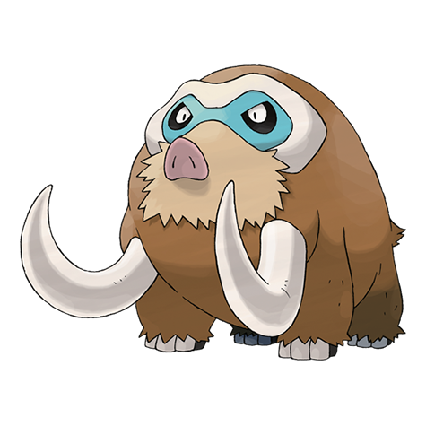 マンムー | こおり | こなゆき／ゆきなだれ | カイリュー・ガブリアス・ヌメルゴンなどドラゴンに（4倍弱点を突ける） |
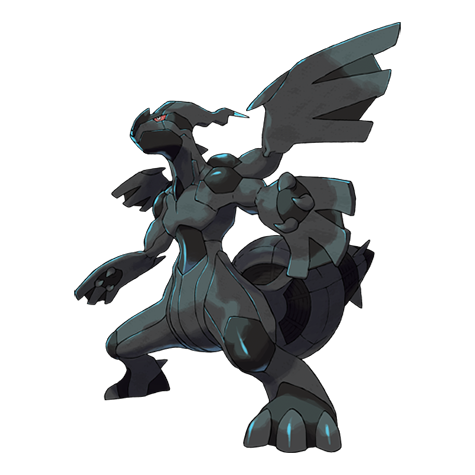 ゼクロム | でんき | でんきショック／クロスサンダー | ヘイラッシャ・ミロカロス・ラプラス・マリルリなどみずに |
 トゲキッス トゲキッス | フェアリー | あまえる／マジカルシャイン | ドラゴン、あく（ブラッキー）、かくとう（コノヨザル）に。かくとう技を受けにくい万能枠 |
 ゲンガー ゲンガー | ゴースト／どく | したでなめる／シャドーボール | エスパー（ソーナンス）・ゴースト・フェアリー削り（どくづき）に |
代替：カイリキー→ルカリオ／ローブシン、メタグロス→ディアルガ／ハッサム、マンムー→マニューラ／ホワイトキュレム、ゼクロム→エレキブル／サンダー、トゲキッス→ニンフィア、ゲンガー→ダークライ。
📘 ジム戦の基本メモ
- やる気（モチベーション）が下がった防衛ポケモンはCPが下がって弱くなる。置かれて時間が経ったジムほど、同じ相手でも楽に倒せます。
- 防衛側は通常技＋ゲージ技の2種で攻撃してきます。ゲージ技は溜め動作があり、画面下に予告が出たら左右スワイプで回避できます（大ダメージを防げる）。
- 攻撃側は時間とともにダメージ倍率が上がり、味方の人数が多いほど早く削れます。
- タイプ相性はレイドと同じ（弱点×1.6／弱点2つで×2.56／半減×0.625）。ただしジムは1体あたり短期戦になりやすく、耐久より手数（DPS）の高いアタッカーが有利。
- 防衛側はきのみでHPを回復されることがあります。もたつくと回復されるので、高火力で一気に削るのが安全。
- 最大6体で挑み、倒すたびに自動で次へ。やられても「やる気」は削れるので、何度か挑めば必ず空にできます。
防衛ポケモンで移動：ハピナス ラッキー カビゴン ケッキング ヘイラッシャ トゲキッス サーナイト フラージェス ニンフィア プクリン ミロカロス ラプラス マリルリ ドヒドイデ メタグロス ハガネール メルメタル カイリュー ガブリアス ヌメルゴン バンギラス ドサイドン ブラッキー ソーナンス フワライド ツボツボ コノヨザル
 ハピナス（ノーマル）
ハピナス（ノーマル）
| 対策 | ポケモン | 通常技／ゲージ技 |
|---|---|---|
| 1 | カイリキー | カウンター／インファイト |
| 2 |  ルカリオ ルカリオ | カウンター／インファイト |
| 3 |  テラキオン テラキオン | ダブルキック／せいなるつるぎ |
| 4 | 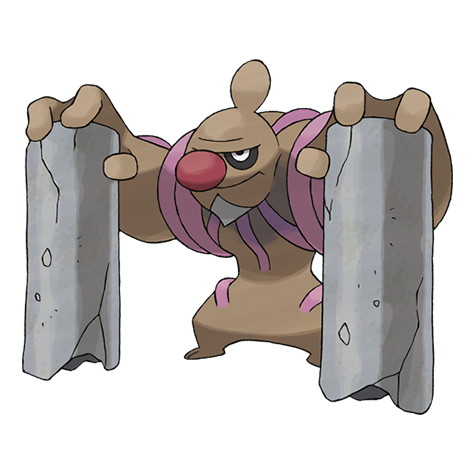 ローブシン | カウンター／ばくれつパンチ |
| 5 | 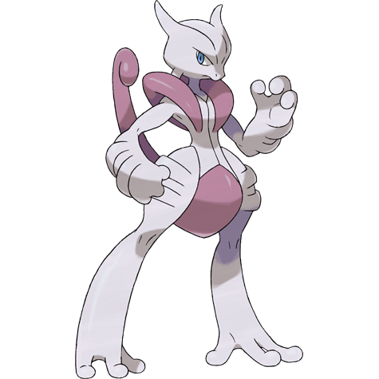 メガミュウツーX | ねんりき／きあいだま |
安全枠サイコキネシス読みなら、はがね複合のルカリオ（かくとう/はがね）がエスパーを等倍に抑えて安全。巨大な耐久なので手数で押す
 ラッキー（ノーマル）
ラッキー（ノーマル）
| 対策 | ポケモン | 通常技／ゲージ技 |
|---|---|---|
| 1 | カイリキー | カウンター／インファイト |
| 2 | ルカリオ | カウンター／インファイト |
| 3 | テラキオン | ダブルキック／せいなるつるぎ |
| 4 |  バシャーモ バシャーモ | カウンター／ブレイズキック |
| 5 | ローブシン | カウンター／ばくれつパンチ |
安全枠ルカリオがエスパー技を等倍で受けられる。短時間で倒せるので回避より手数
 カビゴン（ノーマル）
カビゴン（ノーマル）
| 対策 | ポケモン | 通常技／ゲージ技 |
|---|---|---|
| 1 | カイリキー | カウンター／インファイト |
| 2 | ルカリオ | カウンター／インファイト |
| 3 | メガミュウツーX | ねんりき／きあいだま |
| 4 | テラキオン | ダブルキック／せいなるつるぎ |
| 5 | ローブシン | カウンター／ばくれつパンチ |
安全枠かくとう勢はばかぢからを等倍で受けられる。じこさいせいで回復されるので高火力で押し切る。予告が出たら回避
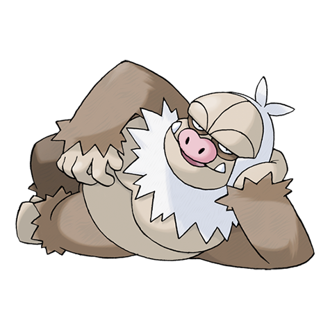
ケッキング（ノーマル）| 対策 | ポケモン | 通常技／ゲージ技 |
|---|---|---|
| 1 | カイリキー | カウンター／インファイト |
| 2 | ルカリオ | カウンター／インファイト |
| 3 | テラキオン | ダブルキック／せいなるつるぎ |
| 4 | バシャーモ | カウンター／ブレイズキック |
| 5 | ローブシン | カウンター／ばくれつパンチ |
安全枠あくび型なら回避不要でひたすら殴る。じしん/いわなだれ型は予告が出たら回避を
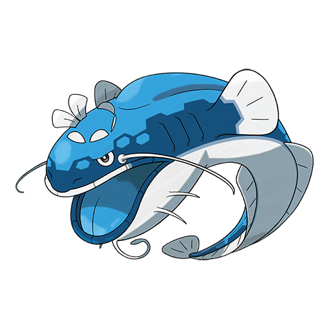
ヘイラッシャ（みず）| 対策 | ポケモン | 通常技／ゲージ技 |
|---|---|---|
| 1 | ゼクロム | でんきショック／クロスサンダー |
| 2 | 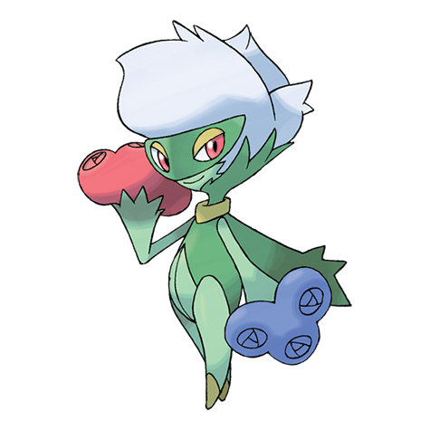 ロズレイド | はっぱカッター／くさむすび |
| 3 | 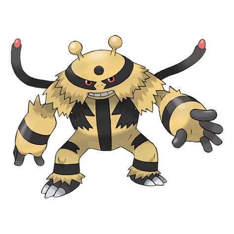 エレキブル | でんきショック／ワイルドボルト |
| 4 |  ジャローダ ジャローダ | つるのムチ／リーフストーム |
| 5 |  サンダー サンダー | でんきショック／10まんボルト |
安全枠くさはみず技を半減。ロズレイド/ジャローダがハイドロポンプに強い安全枠。でんきはげきりんを等倍で受ける
トゲキッス（フェアリー／ひこう）
| 対策 | ポケモン | 通常技／ゲージ技 |
|---|---|---|
| 1 | メタグロス | バレットパンチ／コメットパンチ |
| 2 |  ディアルガ ディアルガ | メタルクロー／アイアンヘッド |
| 3 | 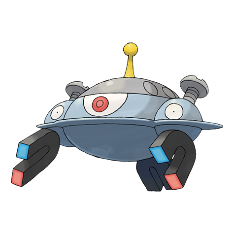 ジバコイル | スパーク／ラスターカノン |
| 4 | エレキブル | でんきショック／ワイルドボルト |
| 5 | 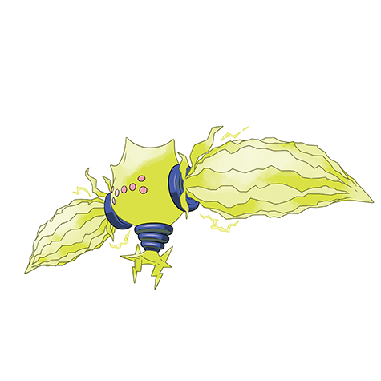 レジエレキ | ロックオン／サンダープリズン |
安全枠はがねはフェアリー技を半減。メタグロス/ディアルガが安全枠。かえんほうしゃ型だけ注意（でんきのエレキブル等なら火を等倍で受けられる）
 サーナイト（エスパー／フェアリー）
サーナイト（エスパー／フェアリー）
| 対策 | ポケモン | 通常技／ゲージ技 |
|---|---|---|
| 1 | メタグロス | バレットパンチ／コメットパンチ |
| 2 | ディアルガ | メタルクロー／アイアンヘッド |
| 3 | 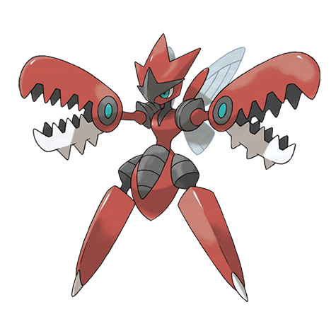 メガハッサム | バレットパンチ／アイアンヘッド |
| 4 | ゲンガー | したでなめる／シャドーボール |
| 5 | 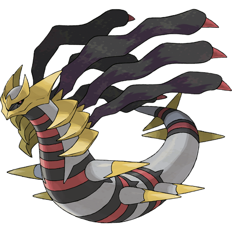 ギラティナ(オリジン) | かげうち／シャドーボール |
安全枠はがね（メタグロス/ディアルガ）はフェアリーもエスパーも半減でき最も安全。ゴースト（ゲンガー）はサイコキネシス弱点なので回避を
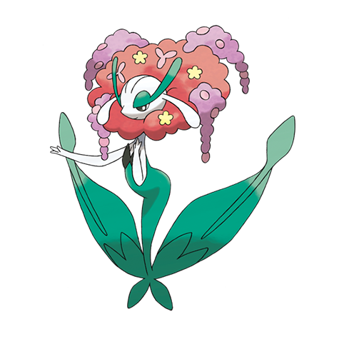
フラージェス（フェアリー）| 対策 | ポケモン | 通常技／ゲージ技 |
|---|---|---|
| 1 | メタグロス | バレットパンチ／コメットパンチ |
| 2 | ディアルガ | メタルクロー／アイアンヘッド |
| 3 | ゲンガー | どくづき／ヘドロばくだん |
| 4 | ロズレイド | どくづき／ヘドロばくだん |
| 5 | メガハッサム | バレットパンチ／アイアンヘッド |
安全枠はがね（メタグロス/ディアルガ）はフェアリーを半減し、くさむすびも等倍で安全。どく（ゲンガー）は手早く削れる
 ニンフィア（フェアリー）
ニンフィア（フェアリー）
| 対策 | ポケモン | 通常技／ゲージ技 |
|---|---|---|
| 1 | メタグロス | バレットパンチ／コメットパンチ |
| 2 | ディアルガ | メタルクロー／アイアンヘッド |
| 3 | ジバコイル | スパーク／ラスターカノン |
| 4 | ゲンガー | どくづき／ヘドロばくだん |
| 5 | ロズレイド | どくづき／ヘドロばくだん |
安全枠はがね（メタグロス/ディアルガ）が最安全。どく勢はサイコショック型だけ回避を
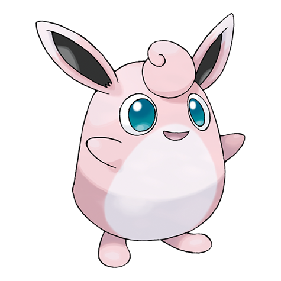
プクリン（ノーマル／フェアリー）| 対策 | ポケモン | 通常技／ゲージ技 |
|---|---|---|
| 1 | メタグロス | バレットパンチ／コメットパンチ |
| 2 | ディアルガ | メタルクロー／アイアンヘッド |
| 3 | ゲンガー | どくづき／ヘドロばくだん |
| 4 | ロズレイド | どくづき／ヘドロばくだん |
| 5 | メガハッサム | バレットパンチ／アイアンヘッド |
安全枠フェアリー複合でかくとうが効かない点に注意（かくとうは等倍）。はがね/どくで弱点を突く。メタグロスが安全枠
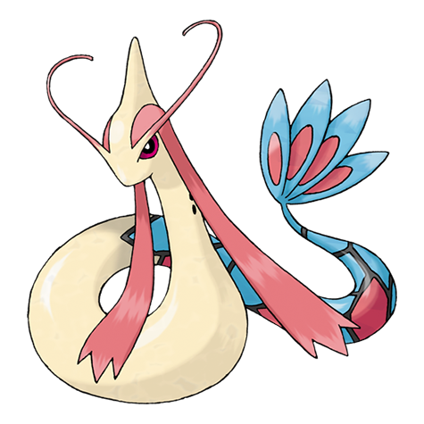
ミロカロス（みず）| 対策 | ポケモン | 通常技／ゲージ技 |
|---|---|---|
| 1 | ゼクロム | でんきショック／クロスサンダー |
| 2 | エレキブル | でんきショック／ワイルドボルト |
| 3 | ロズレイド | はっぱカッター／くさむすび |
| 4 | サンダー | でんきショック／10まんボルト |
| 5 | ジャローダ | つるのムチ／リーフストーム |
安全枠でんき（ゼクロム/エレキブル）はれいとうビームもみず技も等倍で受けられ最安全。くさはれいとうビーム弱点なので回避を
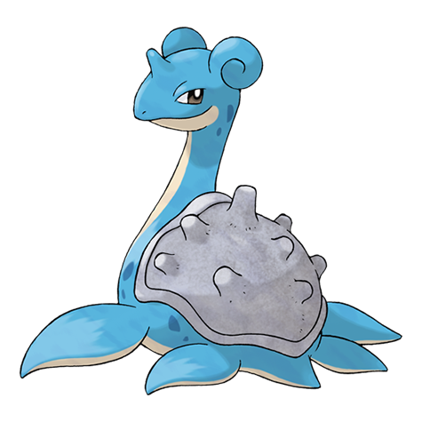
ラプラス（みず／こおり）| 対策 | ポケモン | 通常技／ゲージ技 |
|---|---|---|
| 1 | ゼクロム | でんきショック／クロスサンダー |
| 2 | エレキブル | でんきショック／ワイルドボルト |
| 3 | カイリキー | カウンター／インファイト |
| 4 | テラキオン | ダブルキック／せいなるつるぎ |
| 5 | ロズレイド | はっぱカッター／くさむすび |
安全枠でんき（ゼクロム）はみず技もこおり技も等倍で受けられ最安全。かくとう/いわはハイドロポンプに注意
 マリルリ（みず／フェアリー）
マリルリ（みず／フェアリー）
| 対策 | ポケモン | 通常技／ゲージ技 |
|---|---|---|
| 1 | ゼクロム | でんきショック／クロスサンダー |
| 2 | エレキブル | でんきショック／ワイルドボルト |
| 3 | ロズレイド | どくづき／ヘドロばくだん |
| 4 | サンダー | でんきショック／10まんボルト |
| 5 | ジャローダ | つるのムチ／リーフストーム |
安全枠でんき（ゼクロム/エレキブル）はみず技を等倍で受けられる安全枠。どくのロズレイドはフェアリーも弱点で突ける
 ドヒドイデ（どく／みず）
ドヒドイデ（どく／みず）
| 対策 | ポケモン | 通常技／ゲージ技 |
|---|---|---|
| 1 |  ガブリアス ガブリアス | マッドショット／じしん |
| 2 | 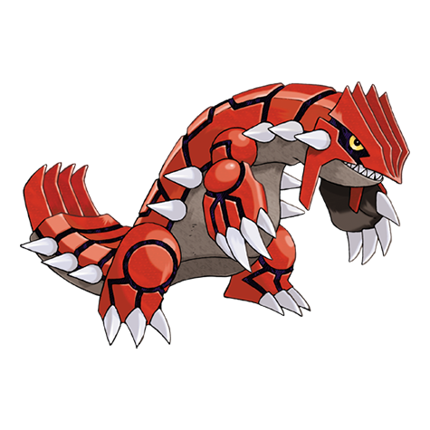 グラードン | マッドショット／じしん |
| 3 | 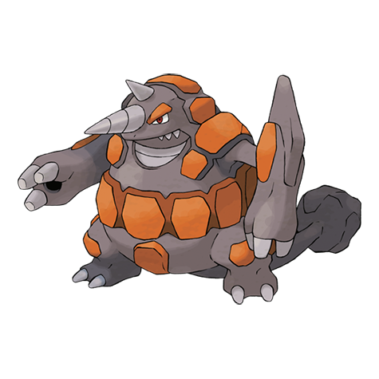 ドサイドン | どろかけ／じしん |
| 4 | 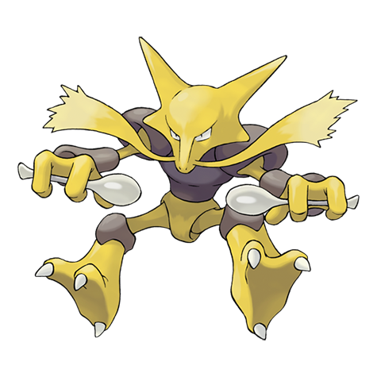 フーディン | ねんりき／みらいよち |
| 5 | ゼクロム | でんきショック／クロスサンダー |
安全枠じめん（ガブリアス/グラードン）はどく技を半減し弱点も突く最安全枠。エスパーはダストシュートを等倍で受ける
メタグロス（はがね／エスパー）
| 対策 | ポケモン | 通常技／ゲージ技 |
|---|---|---|
| 1 | ガブリアス | マッドショット／じしん |
| 2 | グラードン | マッドショット／じしん |
| 3 |  バンギラス バンギラス | かみつく／かみくだく |
| 4 |  ダークライ ダークライ | バークアウト／あくのはどう |
| 5 | 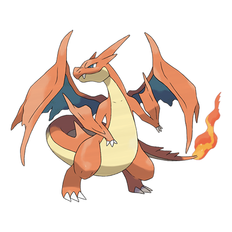 メガリザードンY | ほのおのうず／オーバーヒート |
安全枠あく（バンギラス/ダークライ）はエスパー技が無効＝サイコキネシスを気にせず殴れる安全枠。じしん型にはゴースト/あくが有効
 ハガネール（はがね／じめん）
ハガネール（はがね／じめん）
| 対策 | ポケモン | 通常技／ゲージ技 |
|---|---|---|
| 1 | 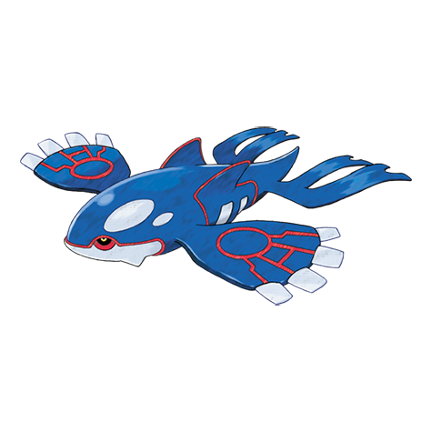 カイオーガ | たきのぼり／なみのり |
| 2 | 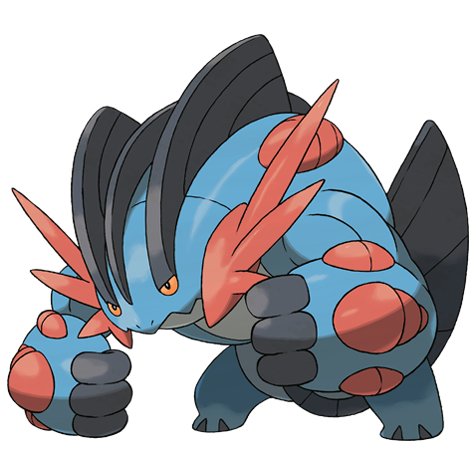 メガラグラージ | みずでっぽう／ハイドロカノン |
| 3 | カイリキー | カウンター／インファイト |
| 4 | ガブリアス | マッドショット／じしん |
| 5 | メガリザードンY | ほのおのうず／オーバーヒート |
安全枠みず（カイオーガ/メガラグラージ）はじしんもストーンエッジも等倍で受けられ、弱点も突ける安全枠。ほのおはじしんに注意
 メルメタル（はがね）
メルメタル（はがね）
| 対策 | ポケモン | 通常技／ゲージ技 |
|---|---|---|
| 1 | カイリキー | カウンター／インファイト |
| 2 | ルカリオ | カウンター／インファイト |
| 3 | テラキオン | ダブルキック／せいなるつるぎ |
| 4 | ガブリアス | マッドショット／じしん |
| 5 | グラードン | マッドショット／じしん |
安全枠じめん（ガブリアス/グラードン）はサンダーパンチが無効で、弱点も突ける安全枠。かくとうはダブルパンツァーに注意
 カイリュー（ドラゴン／ひこう）
カイリュー（ドラゴン／ひこう）
| 対策 | ポケモン | 通常技／ゲージ技 |
|---|---|---|
| 1 | マンムー | こなゆき／ゆきなだれ |
| 2 | 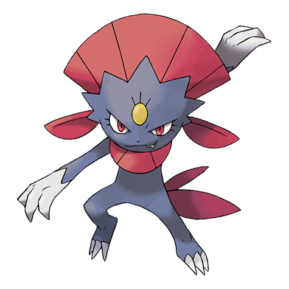 マニューラ | こおりのつぶて／ゆきなだれ |
| 3 |  ホワイトキュレム ホワイトキュレム | こおりのキバ／コールドフレア |
| 4 | トゲキッス | あまえる／マジカルシャイン |
| 5 | 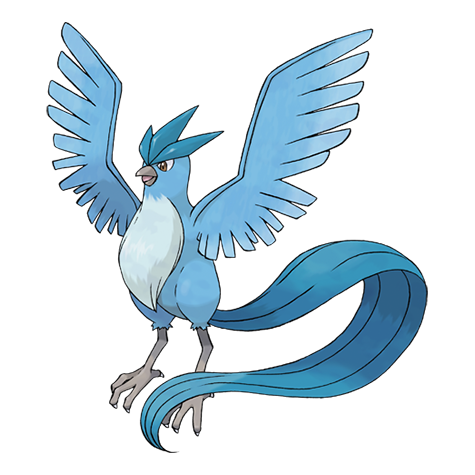 フリーザー | こおりのつぶて／ふぶき |
安全枠こおりは4倍弱点で最速。げきりん読みならフェアリーのトゲキッス（ドラゴン無効）が安全枠。こおり勢はぼうふうを等倍で受ける
ガブリアス（ドラゴン／じめん）
| 対策 | ポケモン | 通常技／ゲージ技 |
|---|---|---|
| 1 | マンムー | こなゆき／ゆきなだれ |
| 2 | ホワイトキュレム | こおりのキバ／コールドフレア |
| 3 | トゲキッス | あまえる／マジカルシャイン |
| 4 | マニューラ | こおりのつぶて／ゆきなだれ |
| 5 | 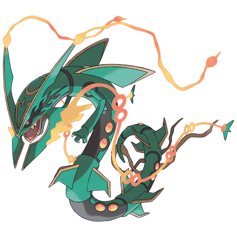 メガレックウザ | りゅうのいぶき／げきりん |
安全枠フェアリーのトゲキッス（ドラゴン無効・じしんも等倍）がげきりんを無効化できる安全枠。こおりは最速だがストーンエッジに注意
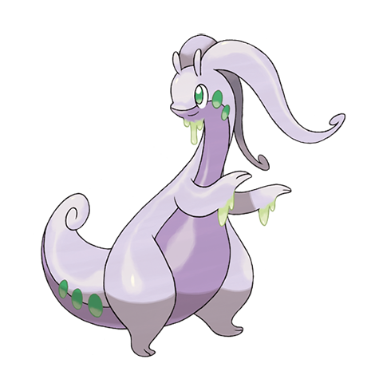
ヌメルゴン（ドラゴン）| 対策 | ポケモン | 通常技／ゲージ技 |
|---|---|---|
| 1 | マンムー | こなゆき／ゆきなだれ |
| 2 | マニューラ | こおりのつぶて／ゆきなだれ |
| 3 | ホワイトキュレム | こおりのキバ／コールドフレア |
| 4 | トゲキッス | あまえる／マジカルシャイン |
| 5 | フリーザー | こおりのつぶて／ふぶき |
安全枠フェアリーのトゲキッス（ドラゴン無効）がりゅうせいぐんに強い安全枠。こおりはだいもんじ型だけ注意
バンギラス（いわ／あく）
| 対策 | ポケモン | 通常技／ゲージ技 |
|---|---|---|
| 1 | カイリキー | カウンター／インファイト |
| 2 | ルカリオ | カウンター／インファイト |
| 3 | テラキオン | ダブルキック／せいなるつるぎ |
| 4 | ローブシン | カウンター／ばくれつパンチ |
| 5 | メガミュウツーX | ねんりき／きあいだま |
安全枠かくとうは4倍弱点＆あく技（かみくだく）を半減できる最強の安全枠（カイリキー/ルカリオ）。だいもんじ型だけ回避を
ドサイドン（じめん／いわ）
| 対策 | ポケモン | 通常技／ゲージ技 |
|---|---|---|
| 1 | カイオーガ | たきのぼり／なみのり |
| 2 | メガラグラージ | みずでっぽう／ハイドロカノン |
| 3 | ロズレイド | はっぱカッター／くさむすび |
| 4 | ジャローダ | つるのムチ／リーフストーム |
| 5 |  ギャラドス ギャラドス | たきのぼり／ハイドロポンプ |
安全枠みずは4倍弱点で最安全（カイオーガ/メガラグラージ、じしん/いわも等倍）。くさも4倍だがメガホーン（むし）に注意
 ブラッキー（あく）
ブラッキー（あく）
| 対策 | ポケモン | 通常技／ゲージ技 |
|---|---|---|
| 1 | カイリキー | カウンター／インファイト |
| 2 | ルカリオ | カウンター／インファイト |
| 3 | メガミュウツーX | ねんりき／きあいだま |
| 4 | トゲキッス | あまえる／マジカルシャイン |
| 5 | メガハッサム | むしくい／シザークロス |
安全枠はがね複合のルカリオはエスパー技（しねんのずつき）を半減しつつかくとうで弱点を突ける安全枠。フェアリーのトゲキッスもあく技を等倍で受ける
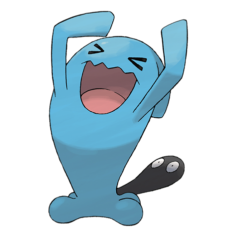
ソーナンス（エスパー）| 対策 | ポケモン | 通常技／ゲージ技 |
|---|---|---|
| 1 | ゲンガー | したでなめる／シャドーボール |
| 2 | ギラティナ(オリジン) | かげうち／シャドーボール |
| 3 | ダークライ | バークアウト／あくのはどう |
| 4 | バンギラス | かみつく／かみくだく |
| 5 | メガハッサム | むしくい／シザークロス |
安全枠ゴースト（ゲンガー/ギラティナ）はかくとう技（カウンター）が無効＝ノーダメージで殴れる最強の安全枠。HPが高いので手数で
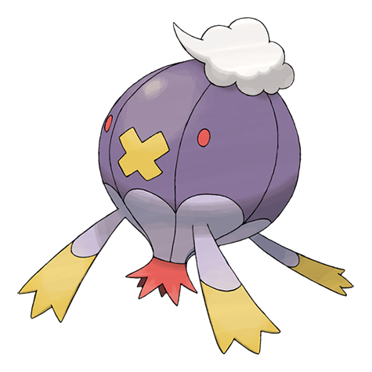
フワライド（ゴースト／ひこう）| 対策 | ポケモン | 通常技／ゲージ技 |
|---|---|---|
| 1 | ダークライ | バークアウト／あくのはどう |
| 2 | バンギラス | かみつく／かみくだく |
| 3 | ゼクロム | でんきショック／クロスサンダー |
| 4 | マンムー | こなゆき／ゆきなだれ |
| 5 | ギラティナ(オリジン) | かげうち／シャドーボール |
安全枠あく（ダークライ/バンギラス）はゴースト技（シャドーボール）を半減できる安全枠。でんきのゼクロムはシャドーボールを等倍で受ける
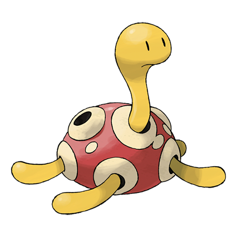
ツボツボ（むし／いわ）| 対策 | ポケモン | 通常技／ゲージ技 |
|---|---|---|
| 1 | カイオーガ | たきのぼり／なみのり |
| 2 | メタグロス | バレットパンチ／コメットパンチ |
| 3 | ガブリアス | マッドショット／じしん |
| 4 | メガリザードンY | ほのおのうず／オーバーヒート |
| 5 | ドサイドン | どろかけ／じしん |
安全枠相手の火力が無いので回避不要。とにかく高火力（DPS）で速く削るのが正解。半減されない高火力枠を当てる
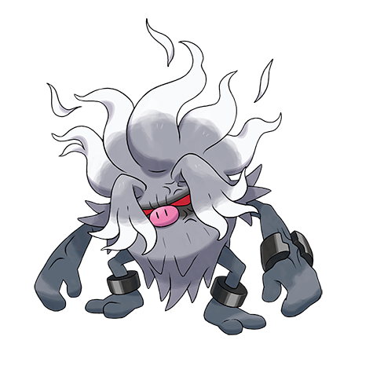
コノヨザル（かくとう／ゴースト）| 対策 | ポケモン | 通常技／ゲージ技 |
|---|---|---|
| 1 | トゲキッス | あまえる／マジカルシャイン |
| 2 | 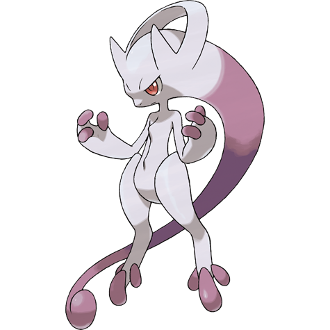 メガミュウツーY | ねんりき／サイコキネシス |
| 3 | フーディン | ねんりき／みらいよち |
| 4 | ゲンガー | したでなめる／シャドーボール |
| 5 | 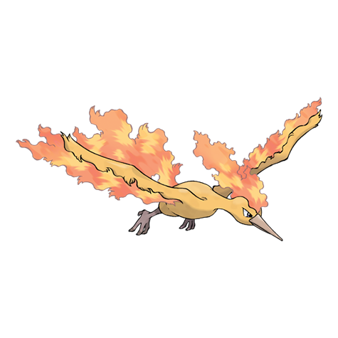 ファイヤー | つばさでうつ／ゴッドバード |
安全枠フェアリーのトゲキッスはかくとう技（カウンター/インファイト）を二重半減し、ゴースト技も等倍＝最安全枠。エスパー勢はあんこくきょうだ（ゴースト）に注意
出典: タイプ相性・弱点はポケモン公式のタイプ相性。技・数値は PokéAPI ／ db.pokemongohub.net 等のゲームデータで照合（2026-11）。対策はジム攻め向けの一般的な高火力アタッカー。防衛側の技は「置かれた個体」によって変わります。
画像: PokéAPI ／ 更新 2026-11-19